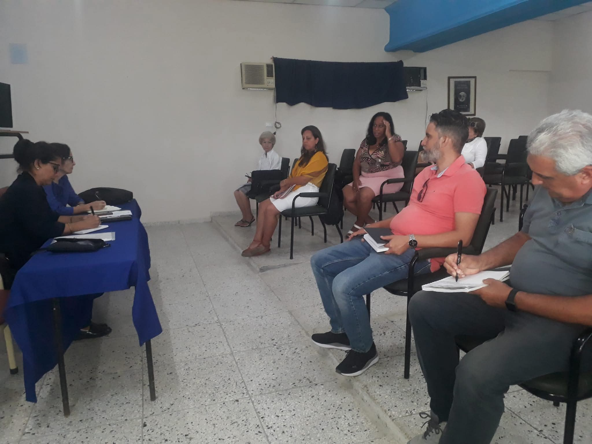
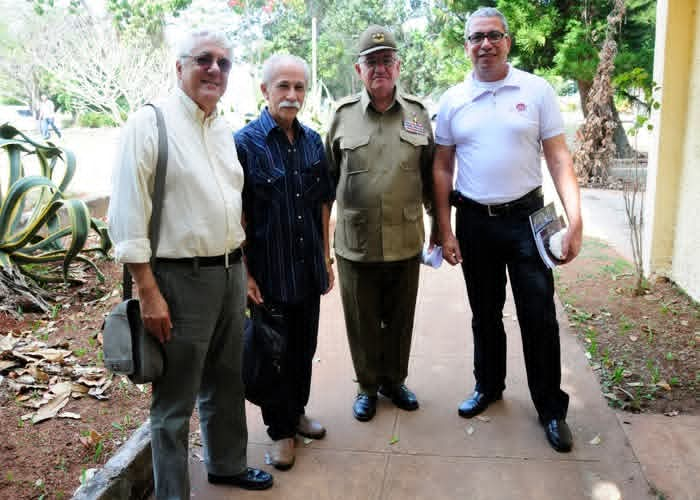
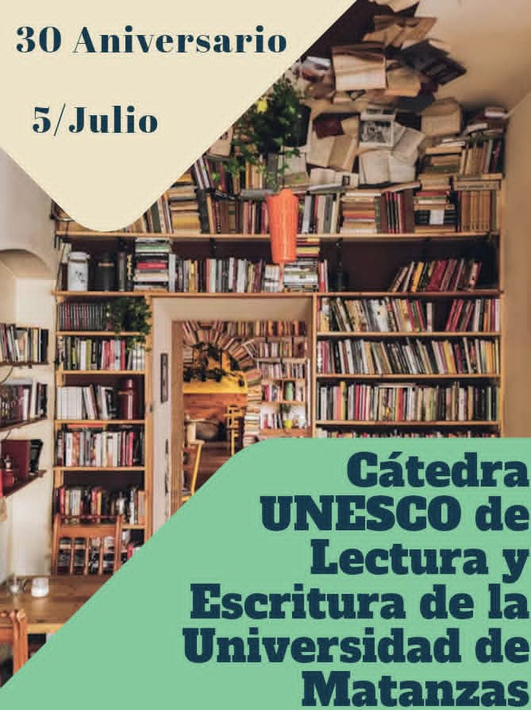

UNIVERSIDAD DE MATANZAS
Extensión Universitaria


Extensión Universitaria
y Formación para
la Descolonización
Intercultural en
Carreras de Lenguas
"Vencer la uniformidad global: educar en la interculturalidad para una conciencia libre y propia".
NUESTRA RAZÓN DE SER
Nuestra Misión
Fomentar la extensión universitaria como vía fundamental para la formación integral de profesionales en lenguas extranjeras, promoviendo procesos de descolonización intercultural que contribuyan al rescate de identidades y al diálogo entre saberes diversos.
UM Matanzas
LO QUE NOS IMPULSA
Principales Retos
Descolonización del currículo
Transformar los programas de estudio para incorporar perspectivas no eurocéntricas y valorar las culturas originarias.
Formación intercultural docente
Capacitar al claustro en metodologías que respeten y promuevan la diversidad cultural en el aula.
Producción de materiales propios
Desarrollar textos y recursos didácticos que reflejen la realidad latinoamericana y caribeña.
Equidad en el acceso lingüístico
Garantizar que la enseñanza de lenguas no reproduzca jerarquías coloniales entre idiomas.
NUESTRA RED ACADÉMICA
Cátedras y Proyectos de Extensión
Toca un icono para descubrir objetivos y contactos.
Cátedra Unesco
Cátedra Multicultural Fernando Ortiz
Estudios Canadienses William Ryan
Patrimonio Natural Gundlach
Taller de Traducción Literaria
Grupo de Interés Especial Stephen Leacock
Grupo de Interés Especial de Lengua y Literatura Rusa
Proyecto CCI / CityTour
Perspectiva de Género y lucha contra la violencia desde la clase de idioma ingles
Escuela Nocturna FEU
Proyecto Extensionista Amarte
Proyecto de Descolonización Intercultural
×
Contacto Académico:
PARTICIPA
Concursos y Convocatorias
Convocatoria abierta
Concurso de Oratoria Intercultural
Presenta tu discurso en cualquier lengua sobre temas de diversidad cultural y descolonización.
15 de mayo, 2026
Próximamente
Festival de Traducción Literaria
Traduce textos de autores caribeños y latinoamericanos a lenguas extranjeras.
20-22 de junio, 2026
Próximamente
Olimpiada de Lenguas Originarias
Celebración y competencia en torno a las lenguas indígenas de las Américas.
10 de septiembre, 2026
NUESTRAS ACTIVIDADES
Fotos y Revistas
Catedras Honorificas apostando por el cumplimiento de los ODS

Balance de las Catedras Honorificas
Labor por las catedras honorificas y Catedras de estudios Canadienses ¨Wiliam Ryan¨
PUBLICACIONES
Artículos de las Cátedras
Celebran aniversario de la Cátedra de lectura y escritura de la Universidad de Matanzas
Universidad de Matanzas: un modelo promocional

Cátedra Honorífica Estudios sobre la Décima reinicia actividades académicas en ocasión del 102 cumpleaños del Indio Naborí

Cátedra UNESCO de Lectura y Escritura llega a sus 30 años
CURIOSIDAD INTERCULTURAL
La Palabra del Mes
La Palabra del Mes (Mayo)
Aché
/a.'tʃe/
Origen: Lucumí (Yoruba).
En el contexto de la descolonización intercultural, el Aché representa más que un saludo; es la energía vital, la bendición y el poder de hacer que las cosas sucedan. Es un concepto clave para entender la resistencia cultural en el Caribe.
En otras lenguas:
Inglés: Spiritual energy / Blessing
Francés: Énergie vitale
Alemán: Lebenskraft / Segen
TU OPINIÓN IMPORTA
Comentarios y Sugerencias
×